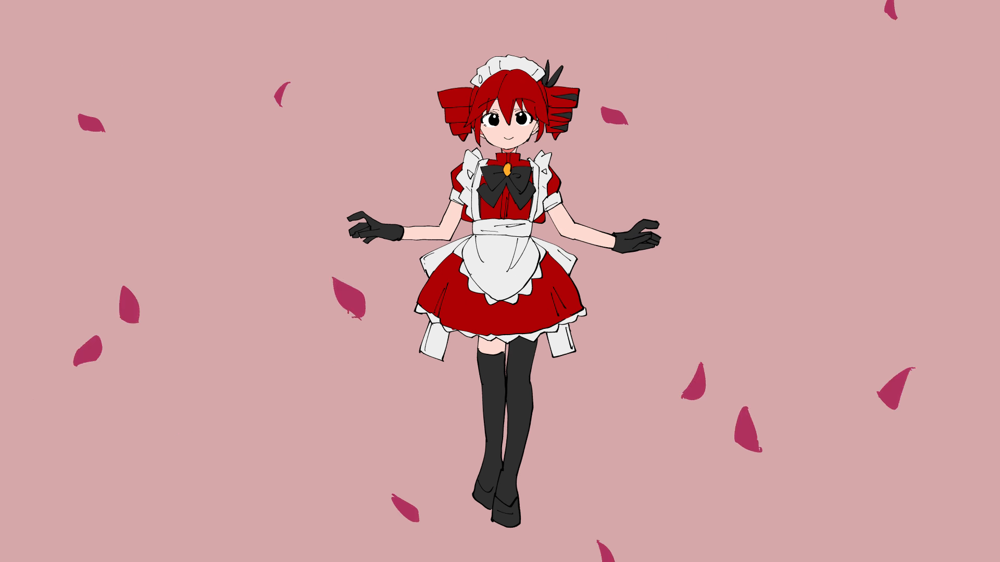
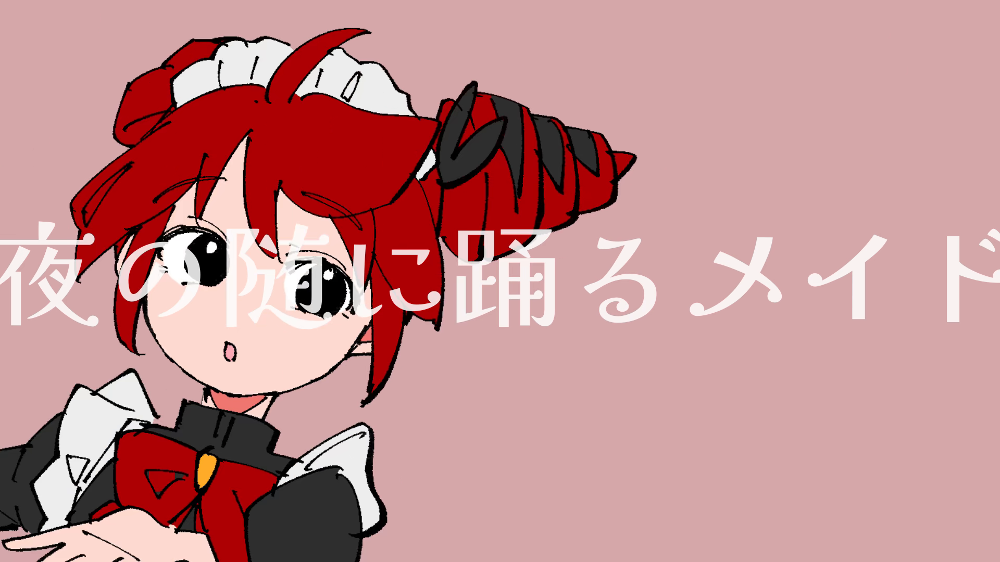
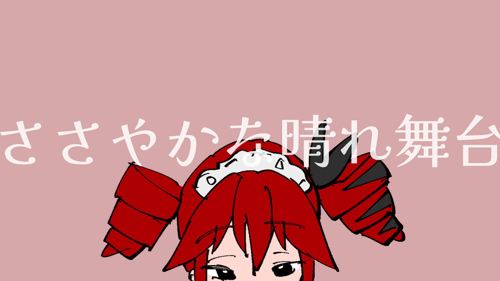
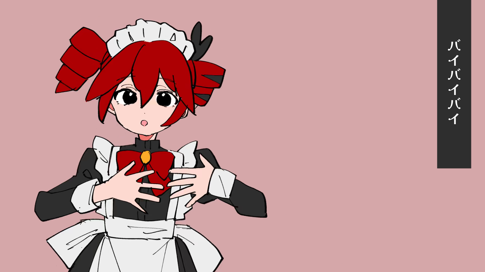
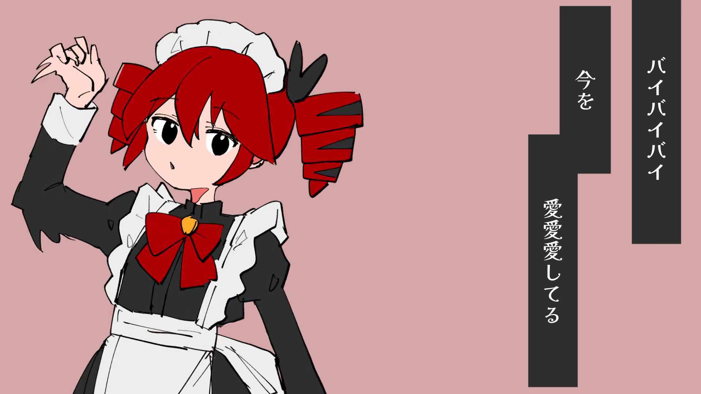
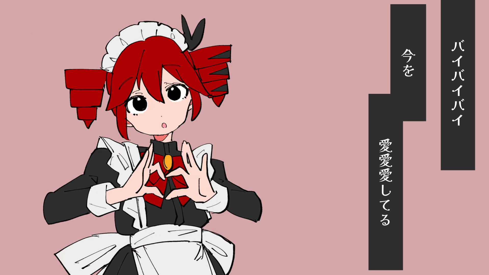
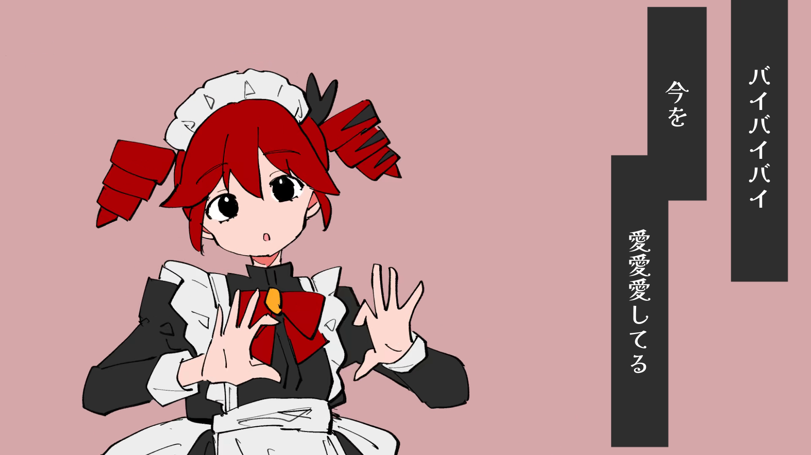
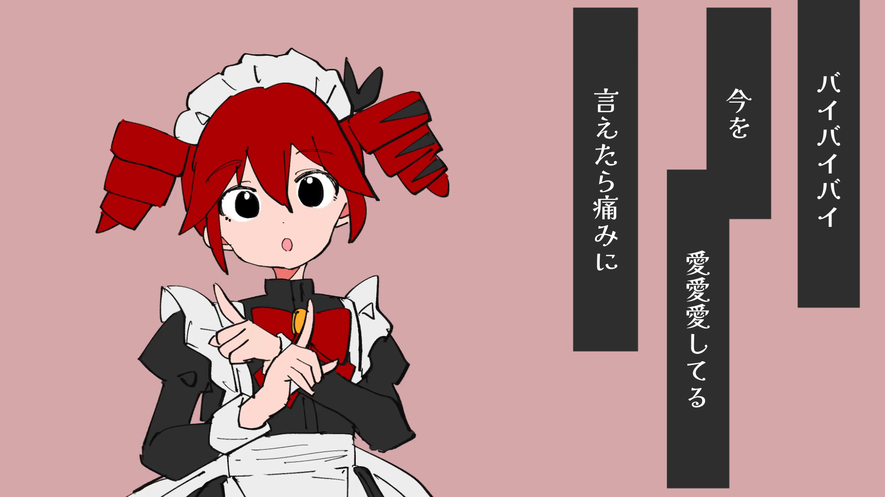
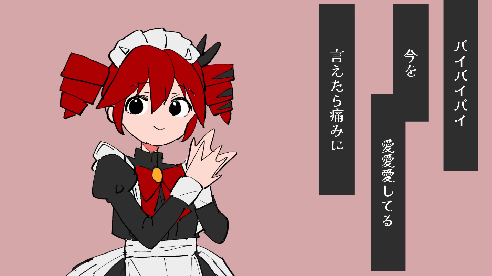
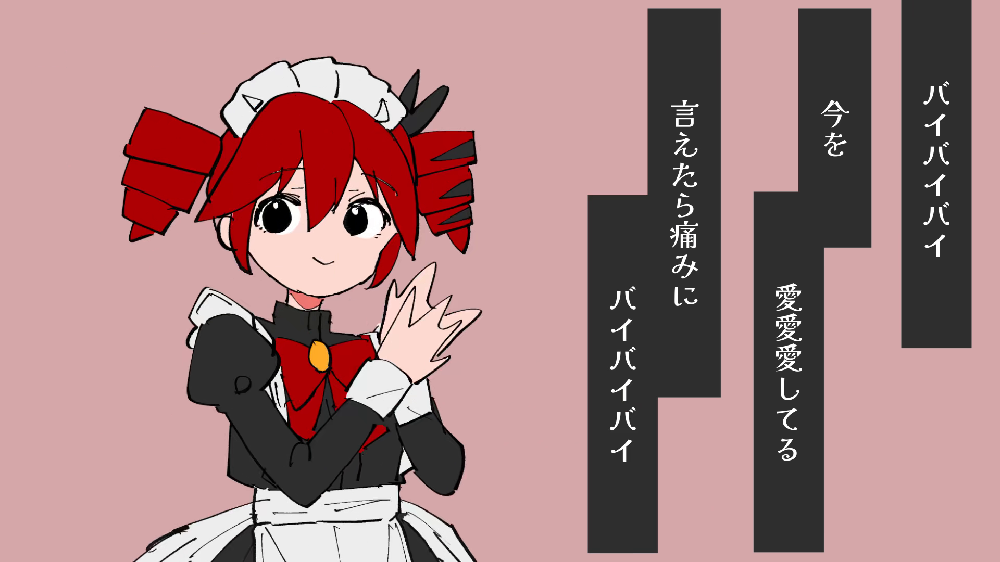

绘制态漏项审计 · 原片补充
已发现并补入 3 个确证漏掉的可见绘制态。这不是“全片作者原画已全部找回”：字幕、花瓣、橙色遮挡、镜头变换下的身份仍有未决项。所有补图来自附件1，保留原尺寸完整构图，不是干净透明原画。
完整4763帧审计JSON · 411构图分层工作台 · 原片
下面 D001–D003 是漏项补帧，D004/D005 是分段边界补样。R前缀是变换/遮挡候选，不能按图片张数统计独立原画。点击可查看原尺寸PNG；PTS单位为1/16000秒。任意未固化候选均保留原视频帧定位，可用审计脚本的 materialize 命令导出，未用近似参考替换原帧。
D001 · F1247 · PTS 665728手势同姿态的睁眼版本
confirmed_missing_visible_drawing_stateD002 · F4603 · PTS 2457920红裙收尾的闭眼过渡姿态
confirmed_missing_visible_drawing_state
D003 · F4679 · PTS 2498496尾部同姿态的第二描线态
confirmed_missing_visible_drawing_stateD004 · F2948 · PTS 1573840M22开头仍在画面内的人物近景A
boundary_character_sample_reuse_identity_unresolvedD005 · F2954 · PTS 1577040M22开头仍在画面内的人物近景B
boundary_character_sample_reuse_identity_unresolvedR002801 · F2801 · PTS 1495360变换/遮挡待核候选（不计作新原画）
transformed_or_occluded_reuse_identity_unresolvedR002804 · F2804 · PTS 1496960变换/遮挡待核候选（不计作新原画）
transformed_or_occluded_reuse_identity_unresolvedR002810 · F2810 · PTS 1500160变换/遮挡待核候选（不计作新原画）
transformed_or_occluded_reuse_identity_unresolvedR002819 · F2819 · PTS 1504976变换/遮挡待核候选（不计作新原画）
transformed_or_occluded_reuse_identity_unresolved
R002825 · F2825 · PTS 1508176变换/遮挡待核候选（不计作新原画）
transformed_or_occluded_reuse_identity_unresolvedR002832 · F2832 · PTS 1511920变换/遮挡待核候选（不计作新原画）
transformed_or_occluded_reuse_identity_unresolvedR002839 · F2839 · PTS 1515648变换/遮挡待核候选（不计作新原画）
transformed_or_occluded_reuse_identity_unresolvedR002846 · F2846 · PTS 1519392变换/遮挡待核候选（不计作新原画）
transformed_or_occluded_reuse_identity_unresolvedR002851 · F2851 · PTS 1522048变换/遮挡待核候选（不计作新原画）
transformed_or_occluded_reuse_identity_unresolvedR002856 · F2856 · PTS 1524720变换/遮挡待核候选（不计作新原画）
transformed_or_occluded_reuse_identity_unresolvedR002860 · F2860 · PTS 1526864变换/遮挡待核候选（不计作新原画）
transformed_or_occluded_reuse_identity_unresolvedR002865 · F2865 · PTS 1529536变换/遮挡待核候选（不计作新原画）
transformed_or_occluded_reuse_identity_unresolvedR002869 · F2869 · PTS 1531664变换/遮挡待核候选（不计作新原画）
transformed_or_occluded_reuse_identity_unresolvedR002873 · F2873 · PTS 1533808变换/遮挡待核候选（不计作新原画）
transformed_or_occluded_reuse_identity_unresolvedR002878 · F2878 · PTS 1536464变换/遮挡待核候选（不计作新原画）
transformed_or_occluded_reuse_identity_unresolvedR002882 · F2882 · PTS 1538608变换/遮挡待核候选（不计作新原画）
transformed_or_occluded_reuse_identity_unresolvedR002886 · F2886 · PTS 1540736变换/遮挡待核候选（不计作新原画）
transformed_or_occluded_reuse_identity_unresolvedR002892 · F2892 · PTS 1543952变换/遮挡待核候选（不计作新原画）
transformed_or_occluded_reuse_identity_unresolvedR002896 · F2896 · PTS 1546080变换/遮挡待核候选（不计作新原画）
transformed_or_occluded_reuse_identity_unresolvedR002900 · F2900 · PTS 1548208变换/遮挡待核候选（不计作新原画）
transformed_or_occluded_reuse_identity_unresolvedR002904 · F2904 · PTS 1550352变换/遮挡待核候选（不计作新原画）
transformed_or_occluded_reuse_identity_unresolvedR002909 · F2909 · PTS 1553024变换/遮挡待核候选（不计作新原画）
transformed_or_occluded_reuse_identity_unresolvedR002916 · F2916 · PTS 1556752变换/遮挡待核候选（不计作新原画）
transformed_or_occluded_reuse_identity_unresolvedR002922 · F2922 · PTS 1559968变换/遮挡待核候选（不计作新原画）
transformed_or_occluded_reuse_identity_unresolvedR002927 · F2927 · PTS 1562624变换/遮挡待核候选（不计作新原画）
transformed_or_occluded_reuse_identity_unresolved
R002932 · F2932 · PTS 1565296变换/遮挡待核候选（不计作新原画）
transformed_or_occluded_reuse_identity_unresolvedR002938 · F2938 · PTS 1568496变换/遮挡待核候选（不计作新原画）
transformed_or_occluded_reuse_identity_unresolvedR002943 · F2943 · PTS 1571168变换/遮挡待核候选（不计作新原画）
transformed_or_occluded_reuse_identity_unresolvedR003625 · F3625 · PTS 1935808变换/遮挡待核候选（不计作新原画）
transformed_or_occluded_reuse_identity_unresolvedR003626 · F3626 · PTS 1936336变换/遮挡待核候选（不计作新原画）
transformed_or_occluded_reuse_identity_unresolvedR003628 · F3628 · PTS 1937408变换/遮挡待核候选（不计作新原画）
transformed_or_occluded_reuse_identity_unresolvedR003630 · F3630 · PTS 1938464变换/遮挡待核候选（不计作新原画）
transformed_or_occluded_reuse_identity_unresolvedR003632 · F3632 · PTS 1939536变换/遮挡待核候选（不计作新原画）
transformed_or_occluded_reuse_identity_unresolvedR003634 · F3634 · PTS 1940608变换/遮挡待核候选（不计作新原画）
transformed_or_occluded_reuse_identity_unresolvedR003637 · F3637 · PTS 1942208变换/遮挡待核候选（不计作新原画）
transformed_or_occluded_reuse_identity_unresolved
R003640 · F3640 · PTS 1943808变换/遮挡待核候选（不计作新原画）
transformed_or_occluded_reuse_identity_unresolvedR003642 · F3642 · PTS 1944880变换/遮挡待核候选（不计作新原画）
transformed_or_occluded_reuse_identity_unresolvedR003645 · F3645 · PTS 1946480变换/遮挡待核候选（不计作新原画）
transformed_or_occluded_reuse_identity_unresolvedR003647 · F3647 · PTS 1947552变换/遮挡待核候选（不计作新原画）
transformed_or_occluded_reuse_identity_unresolvedR003648 · F3648 · PTS 1948080变换/遮挡待核候选（不计作新原画）
transformed_or_occluded_reuse_identity_unresolvedR003650 · F3650 · PTS 1949152变换/遮挡待核候选（不计作新原画）
transformed_or_occluded_reuse_identity_unresolvedR003655 · F3655 · PTS 1951824变换/遮挡待核候选（不计作新原画）
transformed_or_occluded_reuse_identity_unresolvedR003658 · F3658 · PTS 1953424变换/遮挡待核候选（不计作新原画）
transformed_or_occluded_reuse_identity_unresolvedR003661 · F3661 · PTS 1955024变换/遮挡待核候选（不计作新原画）
transformed_or_occluded_reuse_identity_unresolvedR003664 · F3664 · PTS 1956624变换/遮挡待核候选（不计作新原画）
transformed_or_occluded_reuse_identity_unresolvedR003668 · F3668 · PTS 1958752变换/遮挡待核候选（不计作新原画）
transformed_or_occluded_reuse_identity_unresolvedR003671 · F3671 · PTS 1960352变换/遮挡待核候选（不计作新原画）
transformed_or_occluded_reuse_identity_unresolved
R003673 · F3673 · PTS 1961424变换/遮挡待核候选（不计作新原画）
transformed_or_occluded_reuse_identity_unresolvedR003675 · F3675 · PTS 1962496变换/遮挡待核候选（不计作新原画）
transformed_or_occluded_reuse_identity_unresolvedR003678 · F3678 · PTS 1964096变换/遮挡待核候选（不计作新原画）
transformed_or_occluded_reuse_identity_unresolved
R003682 · F3682 · PTS 1966224变换/遮挡待核候选（不计作新原画）
transformed_or_occluded_reuse_identity_unresolvedR003685 · F3685 · PTS 1967840变换/遮挡待核候选（不计作新原画）
transformed_or_occluded_reuse_identity_unresolved
R003689 · F3689 · PTS 1969968变换/遮挡待核候选（不计作新原画）
transformed_or_occluded_reuse_identity_unresolvedR003693 · F3693 · PTS 1972096变换/遮挡待核候选（不计作新原画）
transformed_or_occluded_reuse_identity_unresolvedR003698 · F3698 · PTS 1974768变换/遮挡待核候选（不计作新原画）
transformed_or_occluded_reuse_identity_unresolvedR003701 · F3701 · PTS 1976368变换/遮挡待核候选（不计作新原画）
transformed_or_occluded_reuse_identity_unresolvedR003705 · F3705 · PTS 1978512变换/遮挡待核候选（不计作新原画）
transformed_or_occluded_reuse_identity_unresolvedR003707 · F3707 · PTS 1979584变换/遮挡待核候选（不计作新原画）
transformed_or_occluded_reuse_identity_unresolvedR003708 · F3708 · PTS 1980112变换/遮挡待核候选（不计作新原画）
transformed_or_occluded_reuse_identity_unresolvedR003710 · F3710 · PTS 1981184变换/遮挡待核候选（不计作新原画）
transformed_or_occluded_reuse_identity_unresolvedR003714 · F3714 · PTS 1983312变换/遮挡待核候选（不计作新原画）
transformed_or_occluded_reuse_identity_unresolvedR003716 · F3716 · PTS 1984384变换/遮挡待核候选（不计作新原画）
transformed_or_occluded_reuse_identity_unresolvedR003719 · F3719 · PTS 1985984变换/遮挡待核候选（不计作新原画）
transformed_or_occluded_reuse_identity_unresolvedR003722 · F3722 · PTS 1987584变换/遮挡待核候选（不计作新原画）
transformed_or_occluded_reuse_identity_unresolved
R003726 · F3726 · PTS 1989728变换/遮挡待核候选（不计作新原画）
transformed_or_occluded_reuse_identity_unresolvedR003731 · F3731 · PTS 1992384变换/遮挡待核候选（不计作新原画）
transformed_or_occluded_reuse_identity_unresolvedR003734 · F3734 · PTS 1994000变换/遮挡待核候选（不计作新原画）
transformed_or_occluded_reuse_identity_unresolvedR003737 · F3737 · PTS 1995600变换/遮挡待核候选（不计作新原画）
transformed_or_occluded_reuse_identity_unresolvedR003740 · F3740 · PTS 1997200变换/遮挡待核候选（不计作新原画）
transformed_or_occluded_reuse_identity_unresolved
R003744 · F3744 · PTS 1999328变换/遮挡待核候选（不计作新原画）
transformed_or_occluded_reuse_identity_unresolved
R003746 · F3746 · PTS 2000400变换/遮挡待核候选（不计作新原画）
transformed_or_occluded_reuse_identity_unresolvedR003747 · F3747 · PTS 2000928变换/遮挡待核候选（不计作新原画）
transformed_or_occluded_reuse_identity_unresolvedR003749 · F3749 · PTS 2002000变换/遮挡待核候选（不计作新原画）
transformed_or_occluded_reuse_identity_unresolvedR003750 · F3750 · PTS 2002528变换/遮挡待核候选（不计作新原画）
transformed_or_occluded_reuse_identity_unresolvedR003754 · F3754 · PTS 2004672变换/遮挡待核候选（不计作新原画）
transformed_or_occluded_reuse_identity_unresolvedR003756 · F3756 · PTS 2005744变换/遮挡待核候选（不计作新原画）
transformed_or_occluded_reuse_identity_unresolvedR003763 · F3763 · PTS 2009472变换/遮挡待核候选（不计作新原画）
transformed_or_occluded_reuse_identity_unresolvedR003766 · F3766 · PTS 2011072变换/遮挡待核候选（不计作新原画）
transformed_or_occluded_reuse_identity_unresolved 密集局部复核（方法与证据入口）
37段变化点及原尺寸对照证据
色/线描述子只用于筛查，阈值以下仍可能有细小眼/手/描线变化。全帧RGB重复、人物曝光重复、作者原画身份是三种不同关系。